PE基础
PE文件结构
从本章开始就要学习PE相关的内容。
可执行文件
在了解PE之前，我们需要知道什么是可执行文件，从字面理解可执行文件就是可以由操作系统进行加载执行的文件。
Windows平台下的可执行文件的格式，我们称之为PE（Portable Executable）文件结构；Linux平台下的可执行文件格式，我们称之为ELF（Executable and Linking Format）文件结构。
仔细的人可能会发现PE的全称是Portable Executable，其中文意思就是便携的可执行，而ELF的全称Executable and Linking Format就是可执行可链接格式，那么两者之间的差距就出现了，Windows平台下的PE文件结构是便携的，也就表示其在Windows下是通用兼容的，例如你在Windows7下的可执行文件也可以在Windows8、10系统下运行，而Linux则不一样，不同内核编译的可执行文件在不同内核的环境下是无法使用的。
在这些领域下会用到PE文件格式：
病毒和反病毒；
外挂和反外挂；
加壳和脱壳（保护与破解）；
无源码的情况下修改功能、汉化软件...
识别PE文件
你想要识别一个文件是不是PE文件，或者说是不是一个可执行文件，可以根据PE指纹来识别：首先你需要找到一个可以以16进制打开PE文件的工具（010 Editor），然后找到一个PE文件，用该工具打开PE文件，在文件的开始位置有一个0x5A4D(十进制：MZ)，接着在0x003C位置向后有一个0x100，接着我们再去寻找0x100位置就会出现一个0x4550(十进制：PE)，那么当你用这个方法可以顺利的走通整个流程找到PE，就表示这是一个PE文件，同样这也是一个PE指纹：

如上示例中我使用的是exe后缀的文件，但即使不是exe后缀的文件，例如.sys、.dll后缀的文件，实际上你通过这种方式会发现它们也是PE文件，所以我们不要只看后缀名来认定是不是PE文件，而要具体去看文件中的指纹。
PE文件的整体结构
如上所述中我们可以了解到通过PE指纹的方式识别PE文件，但是我又是如何知道这是否是一个PE文件的呢？这是因为PE文件结构有一个规范和定义，如下图所示就是PE文件的整体结构：

如上图所示众可以发现PE文件有很多结构，其结构格式图可以见附件： PE格式图.pdf（看上去很多，但不需要害怕，一步一步学下去还是非常容易理解的）
PE文件的两种状态
主要结构体
上文中，我们了解了PE文件的整体结构，我们可以看见其中有很多结构体：
这几个主要结构体分别对应的宽度如下所示：
|
结构体 |
宽度（字节） |
|
IMAGE_DOS_HEADER |
64 |
|
IMAGE_FILE_HEADER |
20 |
|
IMAGE_OPTIONAL_HEADER32 |
224 |
|
IMAGE_SECTION_HEADER |
40 |

这些结构体你都可以在Microsoft Visual Studio\VC98\Include\WINNT.H头文件中看见。
文件分析
这些结构体的具体细节，在之后的章节会详细了解，现在我们只需要按照PE文件的整体结构来看一个PE文件（使用010 Editor打开文件）。
DOS部分
首先来看一下DOS部分，首先是DOS MZ文件头IMAGE_DOS_HEADER结构，这个结构占64字节，文件前四行就是了（类似010 Editor这种编辑器，单行都是16字节）：

接着是DOS块，这个大小是不固定的，但是在上文中，我们了解到可以根据某个值定位到PE文件头，我们可以先找到PE文件头，这样夹在他们之间的就是DOS块了，在这里就是IMAGE_DOS_HEADER结构体的e_lfanew成员，如上图所示这里对应的值是0xF8：
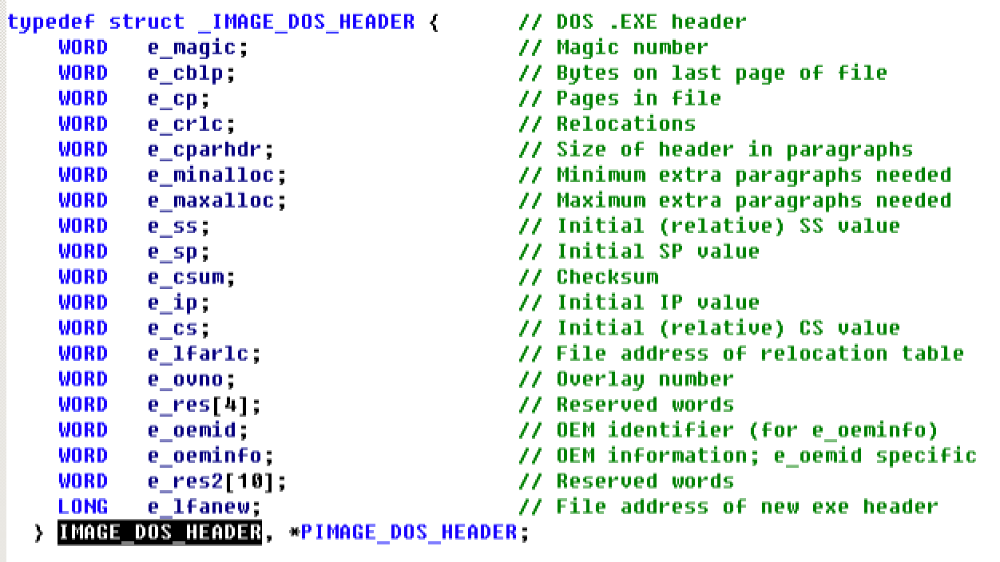
所以如下图所示中，绿色框标记的部分就是DOS块：

PE文件头
接着来看PE文件头，其第一个是PE文件头标志，这里占4字节，也就是上文图中所示的0x4550（PE标识是不能修改的），所以在这不赘述了；PE文件头第二部分就是PE文件表头IMAGE_FILE_HEADER结构，这个结构占20字节，我们也称之为标准PE头：

继续看PE文件头的第三个部分PE文件表头可选部分，我们也称之为扩展PE头，其就是IMAGE_OPTIONAL_HEADER32结构，默认情况下它在32位下是224字节，在64位下是240字节，你也可以通过IMAGE_FILE_HEADER结构的成员去获取/修改扩展PE头的宽度：

在这里也就对应着如下图中的0xF0（因为当前系统和文件都是64位的）：
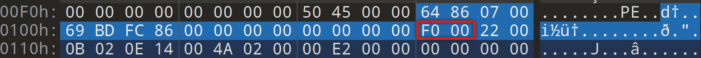
也就表示在这里扩展PE头的宽度就是240字节：
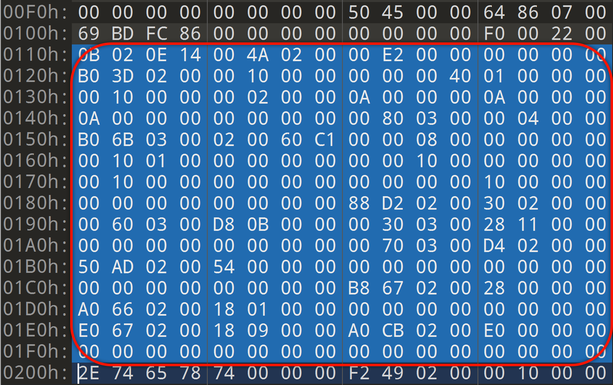
扩展PE头之所以数据宽度较大，是因为其有一个成员是结构体数组：

#define IMAGE_NUMBEROF_DIRECTORY_ENTRIES 16这个成员的宽度就是16个IMAGE_DATA_DIRECTORY结构体的宽度。
节表、节数据
节表很重要，其决定节数据的相关属性，而节数据是我们真正存储数据的地方，其数量和节表是对应的。
节表就是N个IMAGE_SECTION_HEADER结构体组成的，该结构体数据宽度是40字节：
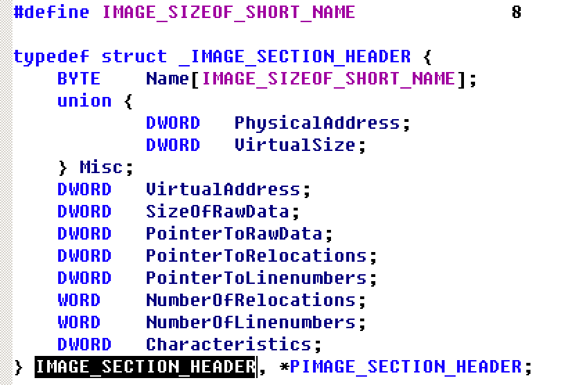
我们可以在该PE文件中看一下有多少个IMAGE_SECTION_HEADER结构体，如下图用不同颜色标记的就是每个节，其实通过编辑器右边的内容你就可以大致知道每个节的表示什么类型了：

在当前PE文件中我们可以知道有4个节表，那也就表示在文件中存储数据的也就有4个部分，在节表之后的就是编译器的插入的数据，而编译器又是如何知道从哪开始插入数据呢？这实际上取决于一个扩展PE头的一个成员SizeOfHeaders：

该成员用来表示DOS头、PE头与节表加起来按照文件对齐以后的大小。这个真正的大小实际上取决于另外一个成员FileAlignment，SizeOfHeaders存储的数值一定是FileAlignment的整数倍，默认情况下该成员的值为0x200。
假设当前DOS头、PE头与节表加起来的宽度为302，而成员FileAlignment的值为200，这时候成员SizeOfHeaders的值按FileAlignment的值进行文件对齐就应该是400，而之所以需要文件对齐是为了提高执行效率，这是一个牺牲空间换时间的一种策略，我们可以在当前PE文件中查看这两个成员：
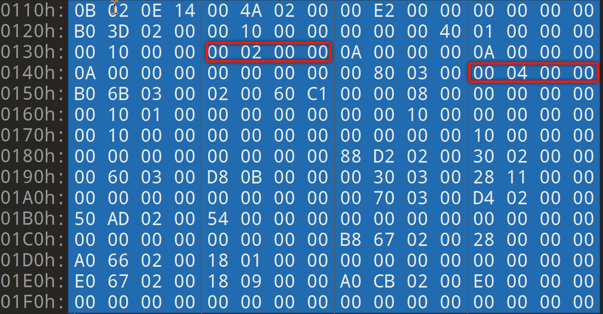
这两个成员刚好与我们假设的值是一样的，所以这里DOS头、PE头与节表加起来按照文件对齐以后的大小就是400，但这样确实比实际大小要多出一些空间，这些空间默认会用0x00填充，但也有可能这些空间会被编译器插入一些信息，接着在400地址之后的就是节数据了。
静动态差异
PE文件在运行前（静态，存储在磁盘上）和运行时（动态，运行在内存中）的格式是有差异的，这种差异对于我们理解PE文件是如何执行的来说很重要。
我们在之前的文件分析过程中实际上所看到的是静态的内容，其大小是要根据FileAlignment的值进行文件对齐的，但是在运行时则整体按照扩展PE头的成员SectionAlignment的值进行内存对齐，默认情况下该值为0x100：
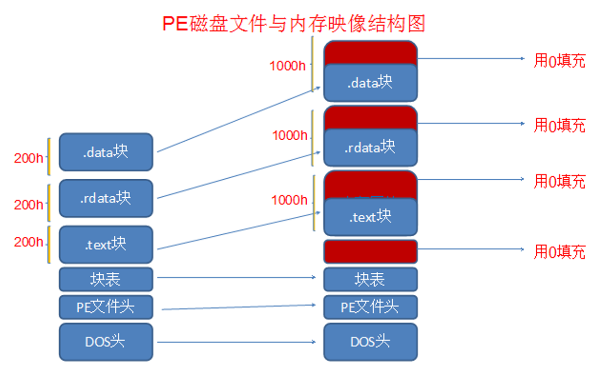
我们可以实际观察一下在内存中的PE文件，首先打开记事本，然后在Winhex中这样选择：

然后找到对应的扩展PE头的成员SectionAlignment的值，这里就是默认的0x1000：

PE文件整体结构解析
之前我们已经按照PE文件的整体结构对实际的PE文件进行了大致上的了解了，现在我们需要来看看每个结构的意义和作用。
DOS头
在之前，我们已经了解过PE文件的整体结构了，并且我们进行了静动态差异的文件分析，其开头部分就是DOS部分，包含了DOS MZ文件头和DOS块，那么我们来了解一些DOS部分的结构和其相关意义。
DOS MZ文件头
DOS MZ文件头就是一个结构体IMAGE_DOS_HEADER，其定义如下所示：
typedef struct _IMAGE_DOS_HEADER { // DOS .EXE header WORD e_magic; // Magic number WORD e_cblp; // Bytes on last page of file WORD e_cp; // Pages in file WORD e_crlc; // Relocations WORD e_cparhdr; // Size of header in paragraphs WORD e_minalloc; // Minimum extra paragraphs needed WORD e_maxalloc; // Maximum extra paragraphs needed WORD e_ss; // Initial (relative) SS value WORD e_sp; // Initial SP value WORD e_csum; // Checksum WORD e_ip; // Initial IP value WORD e_cs; // Initial (relative) CS value WORD e_lfarlc; // File address of relocation table WORD e_ovno; // Overlay number WORD e_res[4]; // Reserved words WORD e_oemid; // OEM identifier (for e_oeminfo) WORD e_oeminfo; // OEM information; e_oemid specific WORD e_res2[10]; // Reserved words LONG e_lfanew; // File address of new exe header } IMAGE_DOS_HEADER, *PIMAGE_DOS_HEADER;它有很多成员，但我们并不需要去深入的理解每个成员的含义和作用，这是因为这个结构体是给16位平台看的，而我们现在的环境大部分都是32位和64位的，所以现在的平台不再需要这个完整的结构体了，只需要其中的两个成员e_magic和e_lfanew。
你可以尝试在16进制的编辑器中去编辑某个EXE文件保留两个成员e_magic和e_lfanew，其他的以0x00填充，然后保存文件，你会发现修改后的文件还是可以正常运行的：
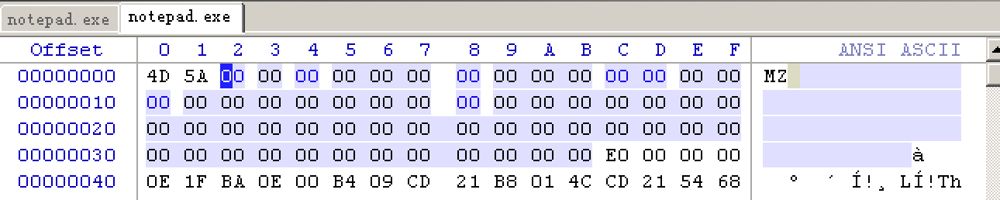
保留这两个成员的原因是因为它们代表着我们之前所说的PE指纹，操作系统也是根据这个来识别是否是PE文件的，所以不能够更改、删除（e_magic是一种标识，e_lfanew则表示PE文件头的位置）。
DOS块
DOS块就是夹在DOS MZ文件头和PE文件头之间的内容，这里面的内容可以根据自己的需要随意的修改和添加，并不会影响文件的正常运行。

PE头
PE头整体就是如下这个结构体：
typedef struct _IMAGE_NT_HEADERS { DWORD Signature; // PE标识 IMAGE_FILE_HEADER FileHeader; // 标准PE头 IMAGE_OPTIONAL_HEADER32 OptionalHeader; // 扩展PE头} IMAGE_NT_HEADERS32, *PIMAGE_NT_HEADERS32;第一个成员就是PE标识，该标识不能破坏，因为操作系统在启动一个程序的时候会检测这个标识。
标准PE头
标准PE头是PE头的第二个成员，它是如下所示的结构体：
typedef struct _IMAGE_FILE_HEADER { WORD Machine; // 可以运行在什么样的CPU上 WORD NumberOfSections; // 表示节的数量 DWORD TimeDateStamp; // 编译器填写的时间戳 DWORD PointerToSymbolTable; // 调试相关 DWORD NumberOfSymbols; // 调试相关 WORD SizeOfOptionalHeader; // 扩展PE头的大小 WORD Characteristics; // 文件属性} IMAGE_FILE_HEADER, *PIMAGE_FILE_HEADER;其第一个成员Machine表示可以运行在什么样的CPU上，如果它的值为0x0则表示可以运行在任意的CPU上，支持在Intel 386以及后续的型号CPU运行则值为0x14c，支持64位的CPU型号则值为0x8664。
我们可以分别在32位、64位系统上提取notepad.exe进行对比来看看这个成员（010 Editor → Tools → Compare Files...）：

第二个成员NumberOfSections表示当前PE文件中节的数量，也就是节表中有几个结构体；第三个成员TimeDateStamp表示编译器编译的时候插入的时间戳，与文件属性里面的创建时间和修改时间是无关的。
第四、第五个成员是调试相关的，我们暂时不用去了解；第六个成员SizeOfOptionalHeader表示扩展PE头的大小，默认情况下32位PE文件对应值位0xE0，64位PE文件对应值为0xF0。
第七个成员Characteristics用来记录当前PE文件的一些属性，该成员是16位（2字节）大小，其每一数据位对应的属性如下所示：

扩展PE头
扩展PE头在32位和64位环境下是不一样的，在本章节中只介绍32位扩展PE头。如下结构体就是32位的扩展PE头：
typedef struct _IMAGE_OPTIONAL_HEADER { WORD Magic; // PE32：10B PE32+：20B BYTE MajorLinkerVersion; // 链接器版本号 BYTE MinorLinkerVersion; // 链接器版本号 DWORD SizeOfCode; // 所有代码节的总和（文件对齐后的大小），编译器填的（没用） DWORD SizeOfInitializedData; // 包含所有已经初始化数据的节的总大小（文件对齐后的大小），编译器填的（没用） DWORD SizeOfUninitializedData; // 包含未初始化数据的节的总大小（文件对齐后的大小），编译器填的（没用） DWORD AddressOfEntryPoint; // 程序入口 DWORD BaseOfCode; // 代码开始的基址，编译器填的（没用） DWORD BaseOfData; // 数据开始的基址，编译器填的（没用） DWORD ImageBase; // 内存镜像基址 DWORD SectionAlignment; // 内存对齐 DWORD FileAlignment; // 文件对齐 WORD MajorOperatingSystemVersion; // 标识操作系统版本号，主版本号 WORD MinorOperatingSystemVersion; // 标识操作系统版本号，次版本号 WORD MajorImageVersion; // PE文件自身的版本号 WORD MinorImageVersion; // PE文件自身的版本号 WORD MajorSubsystemVersion; // 运行所需子系统版本号 WORD MinorSubsystemVersion; // 运行所需子系统版本号 DWORD Win32VersionValue; // 子系统版本的值，必须为0 DWORD SizeOfImage; // 内存中整个PE文件的映射的尺寸 DWORD SizeOfHeaders; // 所有头加节表按照文件对齐后的大小，否则加载会出错 DWORD CheckSum; // 校验和 WORD Subsystem; // 子系统，驱动程序(1)、图形界面(2) 、控制台/DLL(3) WORD DllCharacteristics; // 文件特性 DWORD SizeOfStackReserve; // 初始化时保留的栈大小 DWORD SizeOfStackCommit; // 初始化时实际提交的大小 DWORD SizeOfHeapReserve; // 初始化时保留的堆大小 DWORD SizeOfHeapCommit; // 初始化时实践提交的大小 DWORD LoaderFlags; // 调试相关 DWORD NumberOfRvaAndSizes; // 目录项数目 IMAGE_DATA_DIRECTORY DataDirectory[IMAGE_NUMBEROF_DIRECTORY_ENTRIES]; // 表，结构体数组} IMAGE_OPTIONAL_HEADER32, *PIMAGE_OPTIONAL_HEADER32;扩展PE头的成员有很多，但我们不需要每个都记住，大概的了解一下即可，重点关注如下这几个成员：
成员Magic表示当前PE文件是32位还是64位，32位时该值对应0x10B，64位时该值对应0x20B。
成员AddressOfEntryPoint表示当前程序入口的地址，这个成员要与成员ImageBase相加才能得出真正的入口地址，成员ImageBase用来表示内存镜像基址，也就是PE文件在内存中按内存对齐展开后的首地址，我们可以在实际PE文件中看下，如下图所示就是PE文件静态状态下的两个成员值，AddressOfEntryPoint为0x739D，ImageBase为0x1000000，那么最终的程序在内存中的入口地址就是0x100739D：

那么如何证实推断的结果是正确的呢，我们可以直接使用DTDebug之类的调试器打开这个PE文件，调试器会自动在程序入口断点，如下图所示则表示我们的推测是正确的：

成员FileAlignment、SectionAlignment和SizeOfHeader在之前的章节中已经了解过了，这里不再赘述。
成员SizeOfImage表示在内存中整个PE文件映射的大小，可比实际的值大（内存对齐之后的大小，也就表示必须是SectionAlignment的整数倍）。
成员CheckSum表示校验和，是用来判断文件是否被修改的，它的计算方法就是文件的两个字节与两个字节相加，最终的值（不考虑溢出情况）就是校验和。
最后一个需要我们了解的成员是DllCharacteristics，它用来表示PE文件的特性，但不要被名字所迷惑，它不是针对DLL文件的；它的数据宽度是16位（4字节），其每一数据位对应的属性如下所示：
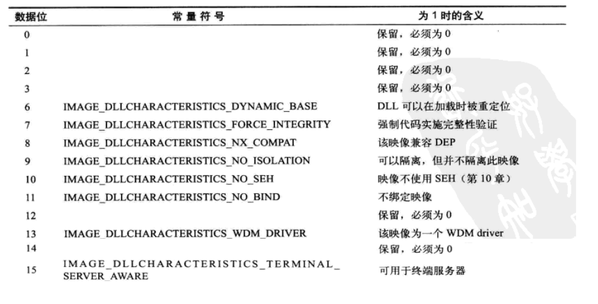
PE节表
在PE中，节数据有几个，分别对应着什么类型以及其他相关的属性都是由PE节表来决定的，PE节表是一个结构体数组，结构体的定义如下所示：
#define IMAGE_SIZEOF_SHORT_NAME 8typedef struct _IMAGE_SECTION_HEADER { BYTE Name[IMAGE_SIZEOF_SHORT_NAME]; // ASCII字符串（节名），可自定义，只截取8个字节，可以8个字节都是名字 union { // Misc，双字，是该节在没有对齐前的真实尺寸，该值可以不准确 DWORD PhysicalAddress; // 真实宽度，这两个值是一个联合结构，可以使用其中的任何一个 DWORD VirtualSize; // 一般是取后一个 } Misc; DWORD VirtualAddress; // 在内存中的偏移地址，加上ImageBase才是在内存中的真正地址 DWORD SizeOfRawData; // 节在文件中对齐后的尺寸 DWORD PointerToRawData; // 节区在文件中的偏移 DWORD PointerToRelocations; // 调试相关 DWORD PointerToLinenumbers; // 调试相关 WORD NumberOfRelocations; // 调试相关 WORD NumberOfLinenumbers; // 调试相关 DWORD Characteristics; // 节的属性} IMAGE_SECTION_HEADER, *PIMAGE_SECTION_HEADER;代码中的注释可以大致了解到每个成员的作用，其中有2个成员来描述节的大小，分别是没有对齐前的真实尺寸和对齐后的宽度，这时候会出现一种情况就是对齐前的真实尺寸大于对齐后的宽度，这就是存在全局变量没有赋予初始值导致的，在文件存储中全局变量没有赋予初始值也就不占空间，但是在内存中是必须要赋予初始值的，这时候宽度就大了一些，所以在内存中节是谁大就按照谁去展开。
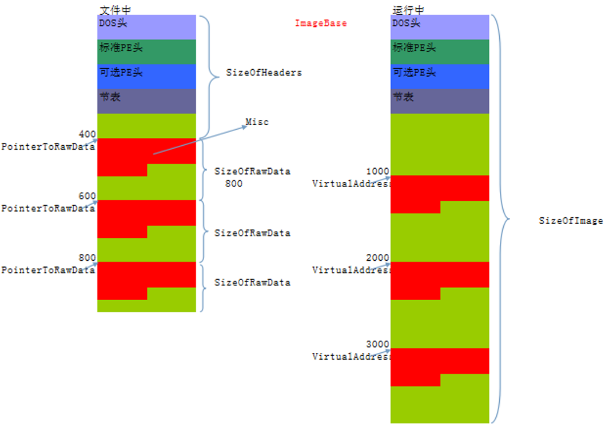
与其他结构体一样，PE节也有属性，这就是成员Characteristics，其数据宽度是16位（4字节），其每一数据位对应的属性如下所示：

更多可以参考如下：
//// Section characteristics.//// IMAGE_SCN_TYPE_REG 0x00000000 // Reserved.// IMAGE_SCN_TYPE_DSECT 0x00000001 // Reserved.// IMAGE_SCN_TYPE_NOLOAD 0x00000002 // Reserved.// IMAGE_SCN_TYPE_GROUP 0x00000004 // Reserved.#define IMAGE_SCN_TYPE_NO_PAD 0x00000008 // Reserved.// IMAGE_SCN_TYPE_COPY 0x00000010 // Reserved.#define IMAGE_SCN_CNT_CODE 0x00000020 // Section contains code.#define IMAGE_SCN_CNT_INITIALIZED_DATA 0x00000040 // Section contains initialized data.#define IMAGE_SCN_CNT_UNINITIALIZED_DATA 0x00000080 // Section contains uninitialized data.#define IMAGE_SCN_LNK_OTHER 0x00000100 // Reserved.#define IMAGE_SCN_LNK_INFO 0x00000200 // Section contains comments or some other type of information.// IMAGE_SCN_TYPE_OVER 0x00000400 // Reserved.#define IMAGE_SCN_LNK_REMOVE 0x00000800 // Section contents will not become part of image.#define IMAGE_SCN_LNK_COMDAT 0x00001000 // Section contents comdat.// 0x00002000 // Reserved.// IMAGE_SCN_MEM_PROTECTED - Obsolete 0x00004000#define IMAGE_SCN_NO_DEFER_SPEC_EXC 0x00004000 // Reset speculative exceptions handling bits in the TLB entries for this section.#define IMAGE_SCN_GPREL 0x00008000 // Section content can be accessed relative to GP#define IMAGE_SCN_MEM_FARDATA 0x00008000// IMAGE_SCN_MEM_SYSHEAP - Obsolete 0x00010000#define IMAGE_SCN_MEM_PURGEABLE 0x00020000#define IMAGE_SCN_MEM_16BIT 0x00020000#define IMAGE_SCN_MEM_LOCKED 0x00040000#define IMAGE_SCN_MEM_PRELOAD 0x00080000#define IMAGE_SCN_ALIGN_1BYTES 0x00100000 //#define IMAGE_SCN_ALIGN_2BYTES 0x00200000 //#define IMAGE_SCN_ALIGN_4BYTES 0x00300000 //#define IMAGE_SCN_ALIGN_8BYTES 0x00400000 //#define IMAGE_SCN_ALIGN_16BYTES 0x00500000 // Default alignment if no others are specified.#define IMAGE_SCN_ALIGN_32BYTES 0x00600000 //#define IMAGE_SCN_ALIGN_64BYTES 0x00700000 //#define IMAGE_SCN_ALIGN_128BYTES 0x00800000 //#define IMAGE_SCN_ALIGN_256BYTES 0x00900000 //#define IMAGE_SCN_ALIGN_512BYTES 0x00A00000 //#define IMAGE_SCN_ALIGN_1024BYTES 0x00B00000 //#define IMAGE_SCN_ALIGN_2048BYTES 0x00C00000 //#define IMAGE_SCN_ALIGN_4096BYTES 0x00D00000 //#define IMAGE_SCN_ALIGN_8192BYTES 0x00E00000 //// Unused 0x00F00000#define IMAGE_SCN_LNK_NRELOC_OVFL 0x01000000 // Section contains extended relocations.#define IMAGE_SCN_MEM_DISCARDABLE 0x02000000 // Section can be discarded.#define IMAGE_SCN_MEM_NOT_CACHED 0x04000000 // Section is not cachable.#define IMAGE_SCN_MEM_NOT_PAGED 0x08000000 // Section is not pageable.#define IMAGE_SCN_MEM_SHARED 0x10000000 // Section is shareable.#define IMAGE_SCN_MEM_EXECUTE 0x20000000 // Section is executable.#define IMAGE_SCN_MEM_READ 0x40000000 // Section is readable.#define IMAGE_SCN_MEM_WRITE 0x80000000 // Section is writeable.RVA与FOA的转换
想象一下，如果你想通过逆向的方式改变一个全局变量的初始值，该怎么做？首先我们可以写一个程序，输出一个全局变量的地址和值：
int a = 0x12345678;int main() { printf("Address: 0x%x \n", &a); printf("Value: 0x%x \n", a); getchar(); return 0;}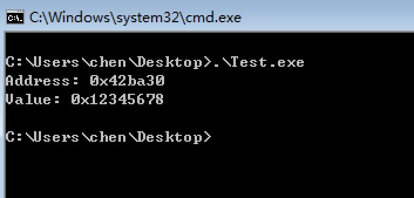
我们运行程序可以看见相应的值，那么我们可以是否可以在文件中直接搜索对应的值然后修改呢？这种方法没有毛病，但是文件中也许会存在很多个0x12345678，你无法准确的知道哪一个才是全局变量；那么，又是否可以通过已经给出的这个地址0x42ba30直接去寻找呢？当然也是不行的，因为在之前章节的学习中我们了解到，PE文件有2种状态（动静态），在这2种状态下，文件的对齐方式会发生变化，所以当前的地址是PE文件运行时（动态）的地址，你需要转换成在磁盘上（静态）的地址。
这两种状态的地址相互转换，我们可以称之为RVA与FOA的转换，RVA就是相对虚拟地址，FOA就是文件偏移地址；从RVA转换到FOA，就是从文件运行时（动态）的地址转换成在磁盘上（静态）的地址，按如下公式可以进行转换：
RVA地址由内存地址减去ImageBase地址（PE文件在内存中的开始位置是由扩展PE头中的ImageBase决定）；
判断RVA地址是否位于PE头中：
如果是，那么RVA等于FOA；
如果不是，判断RVA位于哪个节：
当满足RVA地址大于等于节.VirtualAddress和RVA地址小雨等于节.VirtualAddress加上当前节内存对齐后的大小时，就表示RVA地址在该节中。
RVA地址减去节.VirtualAddress等于差值，FOA地址就是根据节.PointerToRawData加上差值。
在一些较老的编译器中，编译出来的文件会区分文件对齐、内存对齐，但是在现在的编译器编译出来的程序，文件对齐与内存对齐时完全一样的，所以我们不用费这么大的周折，我们只需要算出RVA的值就可以得出FOA的值。
例如，在当前程序中就是这样，根据0x42BA30-0x400000（ImageBase）得出0x2BA30，其是RVA，也是FOA，直接使用Winhex打开找到：
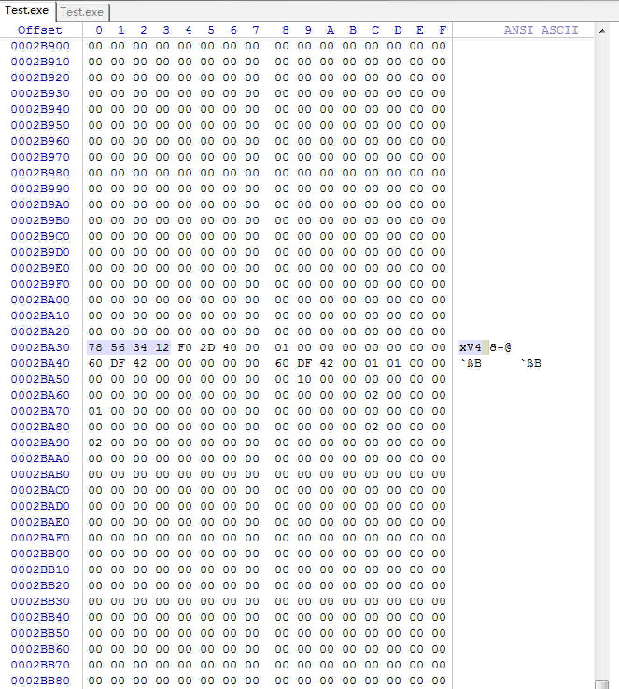
可以直接修改它然后保存运行，这时候你就会发现全局变量的值已经发生了改变：
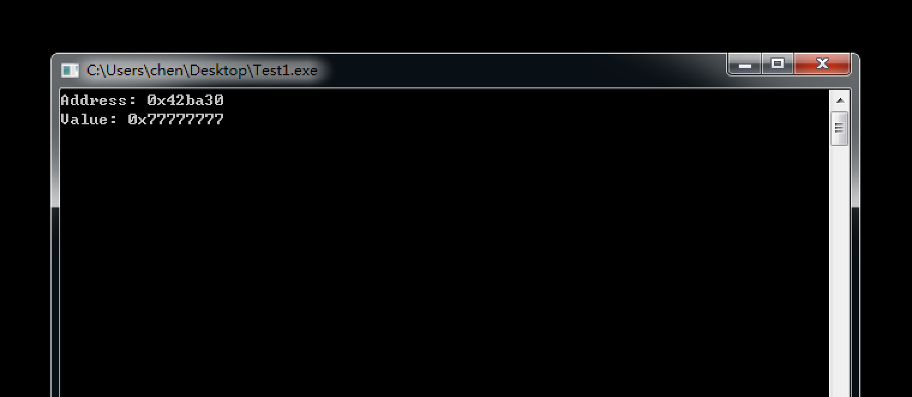
PE空白区添加代码
现在我们有一个任务，需要在空白区添加一段代码（你也可以称之为Shellcode），并且在程序运行之前执行这段代码；首先我们要知道PE空白区是什么，PE空白区表示PE文件按照对齐方式之后多出来的部分，可以是节与节之间的空白区也可以是节表与节之间的空白区。
基本概念了解之后，我们来看下插入的代码，就是如下这个弹窗功能：
::MessageBoxA(0,0,0,0);那么如何让这段代码插入到空白区呢？直接插入代码很明显不可取，因为我们没有源文件，所以我们要插入的是之前所学习的硬编码，我们可以在VC6中下断点反编译查看这段代码对应的硬编码：
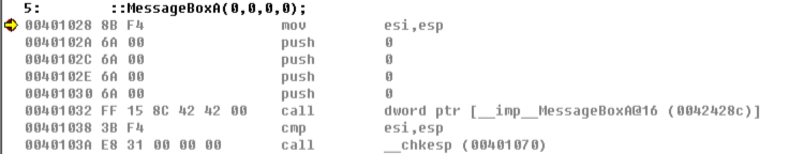
首先我们可以看见有4个传参：6A 00，接着就是调用函数MessageBox了，但是在这里的调用是需要遵循导入表的（后面章节会了解导入表内容），是一个间接调用，我们插入的时候需要修改成直接调用的形式，也就是：E8 00 00 00 00，E8后面的4字节表示一个偏移值，表示当前指令地址与需要调用指令地址之间的偏移，我们可以使用需要调用指令地址减去当前指令地址（包含本身的宽度）就得出这个偏移值。
我们可以先找到MessageBoxA这个函数地址，在Win32的时候也了解过这个函数是技术是Windows操作系统的USER32.DLL提供的，我们可以在DTDebug中打开一个文件按如下图所示，找到对应的DLL文件，双击进去按Ctrl+N快捷键找到MessageBoxA函数的地址：
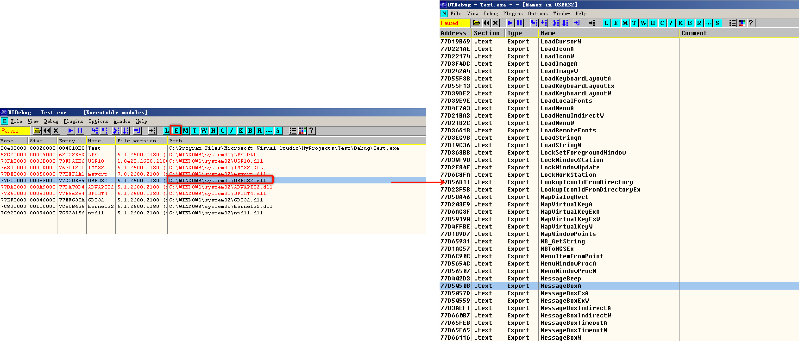
如果你觉得这样麻烦也可以考虑在VC6下面下断点跟进这个函数地址即可：
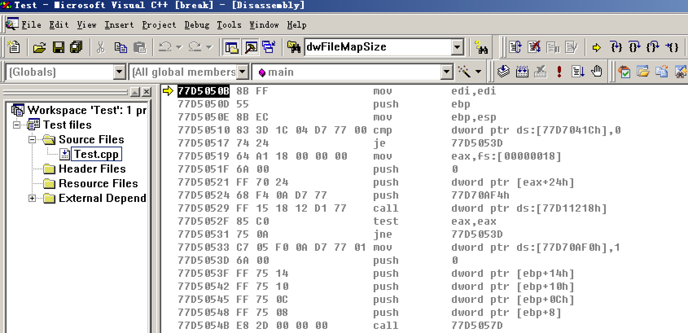
得到了所需要调用的指令地址0x77D5050B，我们还需要知道要填充代码位置的地址，也就是ImageBase加上当前地址（由于现代编译器编译的文件不区分文件、内存对齐，所以不考虑这些），根据扩展PE头可以知道当前ImageBase为0x400000：

这个地址我选择为0xFE0，先填充8字节的6A 00，Call指令开始的位置就是0xFE8，加上ImageBase就是0x400FE8，0x77D5050B减去(0x400FE8+5)（包括指令本身的宽度）等于0x7794F51E，再拼接指令就是：E8 1E F5 94 77，这边注意我们是按小端存储模式去写入的。
至此，我们的工作还没有完成，还需要在插入的代码结束之后跳转回程序的入口，程序的入口地址可以根据扩展PE头的AddressOfEntryPoint成员（加上ImageBase）获得，如下图所示程序入口地址就是0x4010B0：
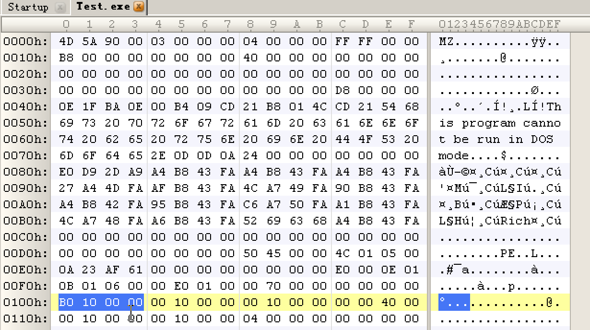
跳回可以使用JMP指令：E9 00 00 00 00，同样这后面的4字节也是偏移值，用程序入口地址减去当前地址即可：0x4010B0 - (0x400FE8+5+5)，最终得出：0xBE，那么指令就变成了：E9 BE 00 00 00。
这样，我们插入的代码都已经准备完毕，填充到空白区即可：

接着，我们还需要修改入口函数的地址为当前地址，这样当前程序运行的时候才会先执行我们的代码，执行完成我们插入的代码后就会JMP回入口函数。
我们只需要在扩展PE头中修改AddressOfEntryPoint成员为0xFE0即可：
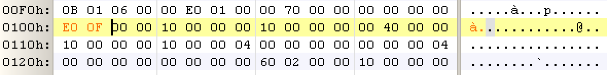
修改完成之后保存运行就会发现其先运行了我们插入的代码而后再进入程序真正的入口函数代码：
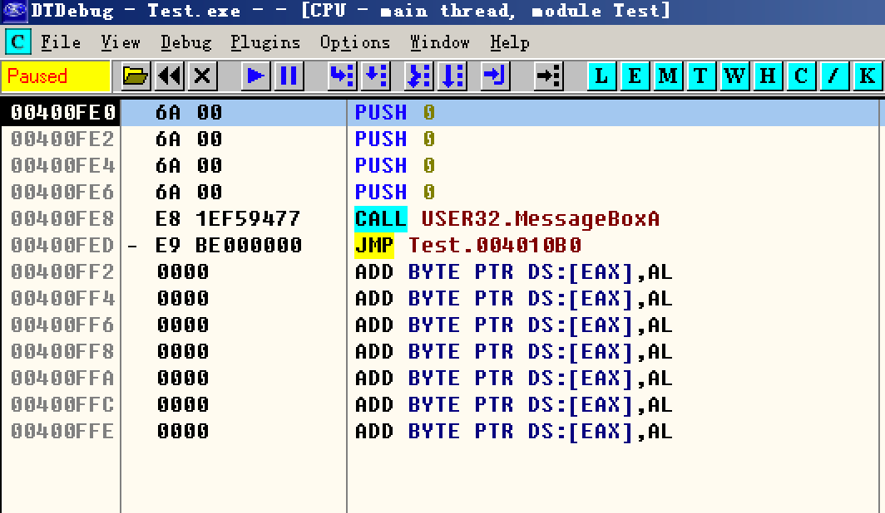
至此，我们就完成了在空白区添加代码并执行的任务了，最后需要注意的是我们这里所插入的代码只能在本机去运行，不能在其他机器上使用，因为这不是一个标准的Shellcode（后续章节会了解Shellcode）。
节操作
以下操作中用的PE文件建议自行寻找一个再去实验。
扩大节
在上一章节中我们可以在任意空白区添加自己的代码，但如果添加的代码比较多，空白区不够怎么办？这时候就需要扩大节，节有很多个，我们应该扩大哪一个节呢？想象一下如果你现在扩大第一个节，那么其他节的偏移量之类的属性都需要修改，这样很麻烦，所以我们可以选择扩大最后一个节，这样就不用修改其他节的属性了。
如下是节表成员的数据结构：
#define IMAGE_SIZEOF_SHORT_NAME 8typedef struct _IMAGE_SECTION_HEADER { BYTE Name[IMAGE_SIZEOF_SHORT_NAME]; // ASCII字符串（节名），可自定义，只截取8个字节，可以8个字节都是名字 union { // Misc，双字，是该节在没有对齐前的真实尺寸，该值可以不准确 DWORD PhysicalAddress; // 真实宽度，这两个值是一个联合结构，可以使用其中的任何一个 DWORD VirtualSize; // 一般是取后一个 } Misc; DWORD VirtualAddress; // 在内存中的偏移地址，加上ImageBase才是在内存中的真正地址 DWORD SizeOfRawData; // 节在文件中对齐后的尺寸 DWORD PointerToRawData; // 节区在文件中的偏移 DWORD PointerToRelocations; // 调试相关 DWORD PointerToLinenumbers; // 调试相关 WORD NumberOfRelocations; // 调试相关 WORD NumberOfLinenumbers; // 调试相关 DWORD Characteristics; // 节的属性} IMAGE_SECTION_HEADER, *PIMAGE_SECTION_HEADER;我们想要扩大节就需要修改这几个部分：SizeOfRawData、VirtualSize。接下来我们就来扩大节，首先需要分配一块新的空间，这块空间的大小取决你所需要的代码大小，在这里就定位0x1000，也就是4096字节，如下图所示使用010 Editor在文件末尾插入字节（这样也就不会打乱其他结构的偏移）：

然后找到最后一个节表成员，修改SizeOfRawData和VirtualSize成员的值，这个值是要取SizeOfRawData和VirtualSize成员当前值的最大值进行内存对齐之后的值加上我们插入宽度0x1000：
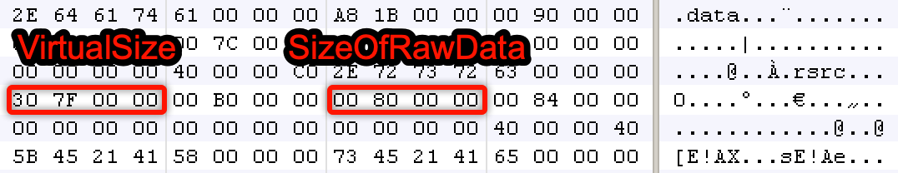
如上图所示两个成员中值最大的为SizeOfRawData，SizeOfRawData是按照文件对齐的，在这里我们还需要将SizeOfRawData的值按内存对齐，首先来看下内存对齐（SectionAlignment）和文件对齐（FileAlignment）的值：
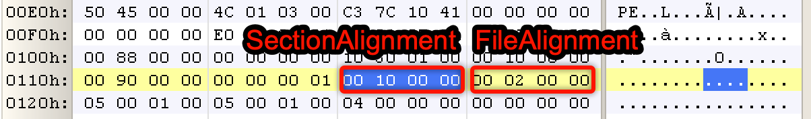
可以看见，在这里两个值不一样，所以当前SizeOfRawData是按文件对齐的值直接添加是不可取的，我们还需要按内存对齐，可以使用如下公式进行计算：
⌈⌉(SizeOfRawData(0x8000) / SectionAlignment(0x1000)) = ResultA(0x8) // 0x8000除以0x1000向上取整(符号⌈⌉)ResultA(0x8) * SectionAlignment(0x1000) = ResultB(0x8000)最终我们得出按内存对齐的值为0x8000，然后我们要将SizeOfRawData和VirtualSize成员的值修改为0x9000（0x8000+0x1000）。

接着，如果你要让这个节中存放代码并且需要执行的话，就需要修改节的属性；然后我们需要去修改扩展PE头中的SizeOfImage成员，该成员表示在内存中整个PE文件映射的大小，如下图是当前的值：
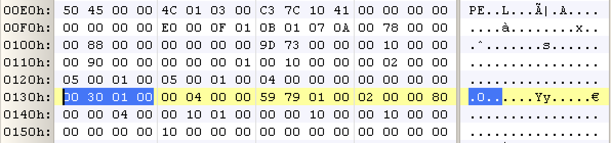
在之前的章节里一家了解过了SizeOfImage可以比实际值要大并且这个值默认情况下本身就是与内存对齐之后的结果，所以你在原基础上加0x1000即可，这样我们就完成了扩大节的操作。
插入代码执行
那么，在扩大节之后又该如何去插入自己的代码调用呢？如果按照之前插入空白区的方法，根据当前的指令地址再加上ImageBase去调用，很明显这是不可取的，因为当前文件与内存对齐是不一致的，我们想要去掉用就要知道在内存中当前指令的地址。
而这个，我们可以使用原SizeOfImage的值获得，因为原SizeOfImage的值表示PE文件在内存中展开的大小，我们单独添加的空间就在PE文件的末尾，所以可以根据SizeOfImage来知道在添加空间中的指令地址；例如如下图所示众标红部分在内存中的地址范围应为ImageBase加原SizeOfImage与指令的宽度，最终的地址范围就是：0x1013000 - 0x1013003
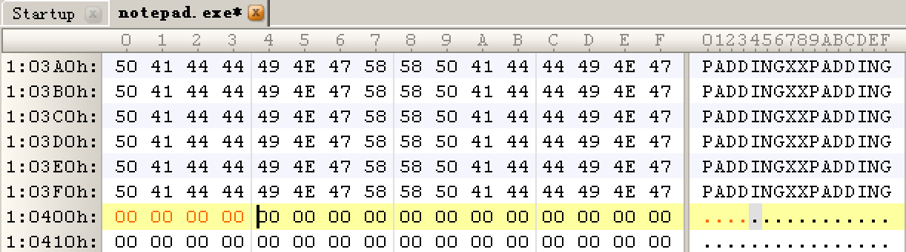
接着，我们只需要添加自己的指令进去即可，这边还是套用在空白区时所使用的指令MessageBoxA（0x77D5050B），并计算出偏移量：
0x77D5050B（MessageBoxA） - 0x1013000（指令开始地址） - 13（指令本身长度） = 0x76D3D4F8再拼接上指令（别忘了小端存储模式）插入即可（这里的指令进行了简化，省略了JMP跳回原AddressOfEntryPoint地址部分）：
6A 00 6A 00 6A 00 6A 00 E8 F8 D4 D3 76最后我们需要修改一下OEP（这里的OEP是Original EntryPoint，也就是原始入口点，没有加壳以及其他修改的情况下，AddressOfEntryPoint就是OEP，但是如果存在修改/加壳的情况，AddressOfEntryPoint只能称为是EP，因为不是原始入口点，你需要自己去寻找了）这里修改也按照之前得出的指令地址去除ImageBase的值进行修改：

接着保存运行即可：
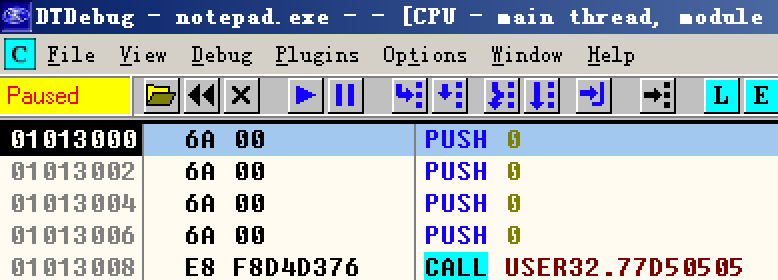
新增节
上一章节中我们知道当想插入的代码过多的时候，空白区不够用的情况下，我们可以使用扩大节的方法扩大最后一个节，然后在里面插入自己的代码；这样的方法虽然有效，但还是有一些弊端，比如最后一个节的属性会被修改，插入的代码会与原节的数据混合在一块。所以，我们可以新增节，在新增的节里添加自己的数据。
新增节，首先判断是否有足够的空间可以添加一个节表成员（40字节），我们可以找到一个PE文件来看一下它的节表部分是否有足够多的空白区，首先我们根据标准PE头的第二个成员（NumberOfSections）知道有4个节：

接着我们在扩展PE头之后找到节表，我们可以看见在这个节表之后有40字节的空白区让我们添加新的节表成员，我们可以选择复制一份".text"节表成员作为新增的成员，这是因为我们要在节数据中添加代码，而".text"就是存放代码的，所以我们直接复制过来就不需要修改节属性了：
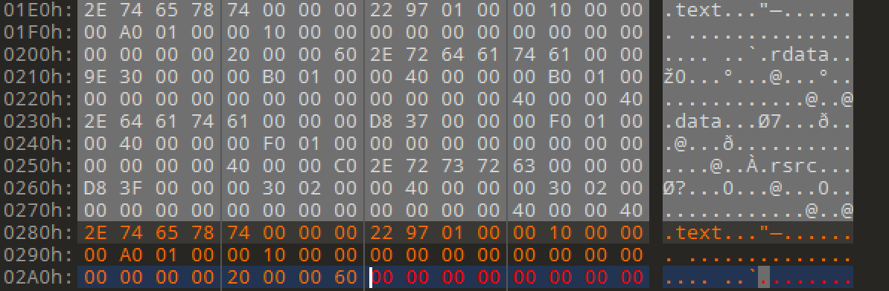
因为我们增加了一个节，所以需要在标准PE头的第二个成员（NumberOfSections）中加1：
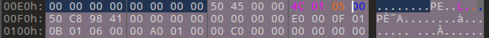
为了方便添加节我们还需要修改下最后一个节表成员的属性，将其真实大小（VirtualSize）修改成文件对齐之后的大小（SizeOfRawData）：

接着修改添加的节表成员的属性：名字、真实大小（0x1000）、文件对齐之后的大小（0x1000）、内存中的偏移（第4个节的偏移地址0x23000+其数据大小0x4000）、文件中的偏移：

然后需要修改一下SizeOfImage的大小，加上0x1000即可：
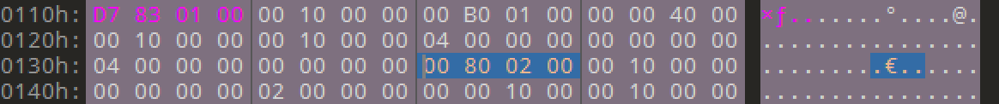
最后在文件末尾添加对应节的数据（0x1000 → 4096个字节）：

这样我们就完成了新增节的所有步骤，你可以基于这个基础再去插入代码执行。
合并节
上一章中了解到新增节需要在节表之后至少有40个字节的空白区给我们去新增，但并不是所有的程序都可以满足这个条件，如下图所示的程序在节表之后的数据是编译器填充的，这些数据我们并不能覆盖：

按内存对齐展开
那么这样我们如何新增节呢？如果PE的DOS块没有被占用的情况下，我们完全可以将PE头向上提升，替换DOS块的部分，这样就可以多出一块空间出来，但是如果当前PE文件的DOS块被占用，这种方法显然就不可取了。所以，我们想要实现新增节可以采用合并其他节的方法，给我们新增的节表成员留出空间。
我们想要合并节，首先要考虑到当前PE文件的文件对齐和内存对齐是否一致，在当前PE文件来看是不一致的，所以直接合并肯定是不行的，我们需要先将节进行内存对齐展开。首先，需要知道当前PE文件的内存对齐的值：
如上图所示内存对齐就是0x1000，接着找到节表成员，将其对应成员属性按如下公式代入计算：

⌈⌉(max(SizeOfRawData, Misc) / SectionAlignment) = ResultA // 取SizeOfRawData和Misc之间的最大值除以内存对齐的值，最后的结果向上取整(符号⌈⌉)ResultA * SectionAlignment = ResultB // ResultA乘以内存对齐的值// 代入公式计算max(0x7800, 0x7748) = 0x7800⌈⌉(0x7800 / 0x1000) = ⌈⌉(0x7 余 0.8) = 0x80x8 x 0x1000 = 0x8000按公式得出的结果替换原先的SizeOfRawData、Misc：
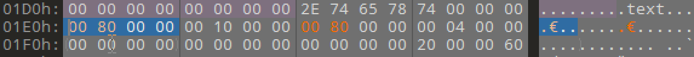
接着我们需要将内存对齐后的值减去原SizeOfRawData的值，得出一个差值：
0x8000 - 0x7800 = 0x800这个值则用于增加节的空间，找到该节的末尾，也就是PointerToRawData的值加上原SizeOfRawData的值：
0x400 + 0x7800 = 0x7C00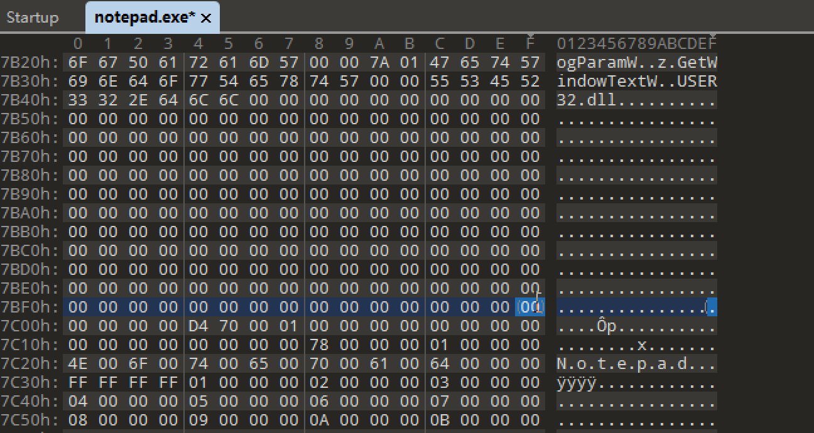
在这开始添加0x800字节的空间：

由于我们这里修改了第一个节的大小并添加了空间，所以之后的节的文件偏移（PointerToRawData）要对应添加上增加的差值：

按照这样的步骤以此类推将所有的节全部按照内存对齐的方式进行修正（由于SizeOfImage本身就是按内存对齐之后的大小，所以其的值会比实际值大，我们这里添加的空间从理论上来说也不会超出这个值，甚至我们所添加之后的大小是等于这个值的，也就无需更改）。
手动合并节
接下来我们需要计算出所有节的大小，这里我们可以使用SizeOfImage减去SizeOfHeaders内存对齐之后的大小，得出的结果0x12000就是所有节的大小（你也可以选择计算所有节展开后的大小和，这时候你就会发现这里的大小是一模一样的）：
那么这个值我们就对应给到第一个节表成员中的SizeOfRawData、Misc：
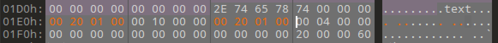
然后由于我们合并了其他的节，但是其他节的Characteristics（属性）是不一样的，我们合并了也要将其他节的属性添加进来，这里可以选择使用或运算，如下图所示就是进行或运算之后的结果0xE0000060：
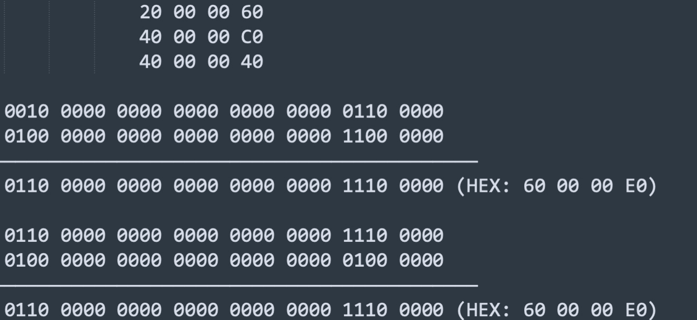
将这个结果给到第一个节表成员的Characteristics即可。最后因为所有节合并为一了，所以我们要修改NumberOfSections的值为1：

其他的节表成员可以用00填充，这一块空间就可以给我们添加自己的节表成员：

导出表
一个可执行程序是由多个PE文件组成，这些PE文件依靠倒入表、导出表进行联系，导出表存储着PE文件提供给其他人使用的函数列表，导入表则存储着PE文件所需要用到的PE文件列表。从PE文件的角度去看，任何PE文件都可以有导入、导出表，从一般情况下来看，EXE文件不会提供导出表，也就是不会提供给他人使用的函数，但这并不代表不可以提供。
定位导出表
在PE格式图中，扩展PE头最后一个成员是结构体数组，在这个结构体数组里面有16个结构体，第一个结构体就是导出表相关的信息，它有2个成员，一个表示导出表的地址，一个表示导出表的大小。如下图所示中的_IMAGE_EXPORT_DIRECTORY，就是PE导出表的结构：
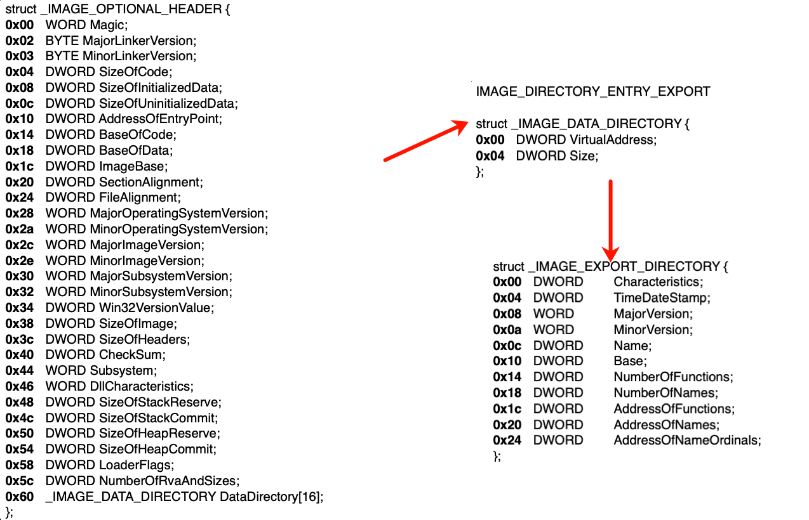
我们可以自己编写、发布一个DLL，导出表这样写：
EXPORTSAdd @10Sub @12Div @13 NONAMEMul @15接着我们可以手动去定位一下导出表的位置，先找到扩展PE头的最后一个成员结构体数组：

然后找到该结构体数组的第一个结构体，里面就包含了导出表的地址和大小：
VirtualAddress: 0x0002AD80Size: 0x0000017F这个地址是RVA，它实际上表示的是相对虚拟地址，我们需要将其转为FOA，也就在文件中的偏移地址，由于在当前PE文件中文件对齐和内存对齐是一样的，即RVA等于FOA，所以我们也不需要进行转换：

接着跟进这个地址就可以找到导出表了：

接着我们来看下导出表的结构，你会发现我们实际上找到的导出表，其整体大小是大于如下结构（40字节），这是因为在这张表中还包含了3个子表，也就是如下结构体的最后三个成员：
typedef struct _IMAGE_EXPORT_DIRECTORY { DWORD Characteristics; // 未使用 DWORD TimeDateStamp; // 时间戳，表示当前PE文件（DLL）编译时的时间 WORD MajorVersion; // 未使用 WORD MinorVersion; // 未使用 DWORD Name; // 当前导出表文件名字符串的地址 DWORD Base; // 导出函数起始序号 DWORD NumberOfFunctions; // 所有导出函数的个数 DWORD NumberOfNames; // 以函数名字导出的函数个数 DWORD AddressOfFunctions;// RVA，导出函数地址表 DWORD AddressOfNames; // 导出函数名称表RVA DWORD AddressOfNameOrdinals; // 导出函数序号表RVA} IMAGE_EXPORT_DIRECTORY, *PIMAGE_EXPORT_DIRECTORY;所以排除子表，我们的结构体就只有40字节，接着我们从第4个成员，逐步解析。
解析导出表成员
Name
用于表示当前导出表文件名，这是一个字符串，所以我们只需要找到00即停止寻找：
0x0002ADD2 -> DLLDemo.dll
Base
用于表示当前导出函数的起始序号，也就是你定义的.DEF中最小的那个序号：
0x0000000A -> 10NumberOfFunctions
用于表示所有导出函数的个数，这个数是按照你定义的.DEF中的序号算的，如果在导出时不按序号顺序导出，则空余位也计入总和，例如如下所示，我们实际上只有4个导出函数，但是因为导出函数的序号没有按照顺序来进行导出，导致计算的时候将空缺的也算入进去了：
0x00000006 -> 6NumberOfNames
用于表示以函数名字导出的函数个数，如果你在定义的.DEF中设置了导出函数的属性为NONAME则就是以序号的方式导出：
0x00000003 -> 3AddressOfFunctions
用于表示导出函数地址表的地址，这里的地址是RVA，如果当前PE文件的文件对齐与内存对齐不一致，需要转换为FOA，我们这边是一样的，所以不需要进行转换；通过NumberOfFunctions知道有6个导出函数，所以从该地址开始依次寻找6个4字节的地址即可，我们可以很清楚的看见这里的地址有些就是00填充的：
0x0002ADA8 -> 0x0000100A0x0000100F0x000000000x000010190x000000000x00001014
如果你想看见具体的这些函数对应的代码，可以根据偏移地址找到对应的字节码，而后将其放入DTDebug之类的调试工具即可看见完整的代码，但是在这里编译器做了一下优化，加了一层JMP跳转，具体的就要跟下去了：
|
函数名 |
地址 |
字节码 |
|
Add |
0x0000100A |
E9 61 00 00 00 |
|
Sub |
0x0000100F |
E9 8C 00 00 00 |
|
Div |
0x00001019 |
E9 E7 00 00 00 |
|
Mul |
0x00001014 |
E9 B2 00 00 00 |
AddressOfNames
用于表示导出函数名称表的地址，这张表是按照首字母A-Za-z排序的，同样这里的地址是RVA，需要转换为FOA；通过NumberOfNames知道有3个是以函数名字导出的函数，所以从该地址开始依次寻找3个4字节的地址即可：
0x0002ADC0 ->0x0002ADDE0x0002ADE20x0002ADE6根据地址就可以找到对应的函数名（字符串见0x00即止）：

AddressOfNameOrdinals
用于表示导出函数序号表的地址，同样这里的地址是RVA，需要转换为FOA；这里表中的成员数与AddressOfNames是一致的，但需要注意，序号表中的每个成员为2字节，那也就是从该地址开始依次寻找3个2字节数据即可：
0x0002ADCC ->0x00000x00050x0002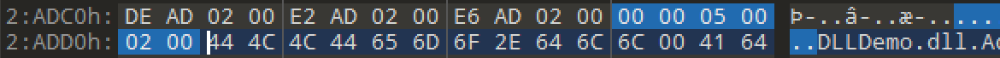
至此，我们就解析完所有的导出表成员了。
子表之间的关系
当我们去调用一个DLL文件，使用其中的方法，需要使用到GetProcAddress函数去获取函数的地址然后调用：
FARPROC GetProcAddress( HMODULE hModule, // DLL模块句柄 LPCSTR lpProcName // 函数名/序号);它的第二个参数lpProcName可以是函数名也可以是序号，而它的原理也正可以表示导出表中的三张子表之间的关系。
GetProcAddress(hModule, "Mul")
当直接使用函数名去寻找时，它的步骤是这样的：
先用函数名字去查询函数名称表的索引（每张表都有一个从0开始的索引）；
根据函数名称表对应的索引去查函数序号表对应索引的序号；
根据函数序号表对应索引的序号查询函数地址表对应索引的地址。
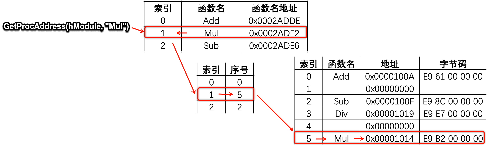
GetProcAddress(hModule, 13)
当直接使用序号去寻找时，它的步骤是这样的：
使用序号减去Base（起始序号）得到的值；
将该值代入函数地址表对应索引，获得函数地址。
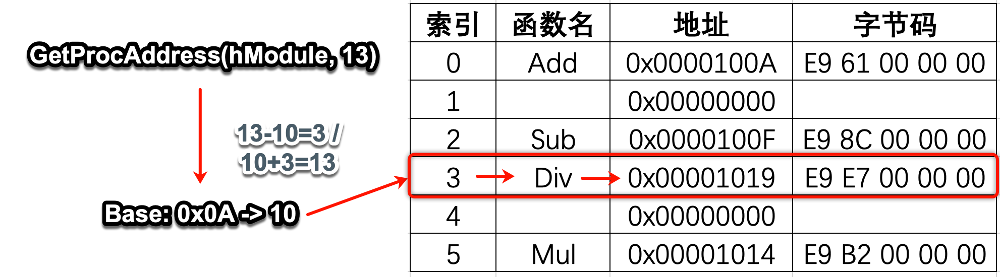
导入表
PE文件所依赖的模块以及涉及到依赖模块中的具体函数都存储在导入表中，我们可以在PE格式图的扩展PE头最后一个成员结构体数组中的第二个结构体找到导出表相关的信息，它有2个成员，一个表示导入表的地址，一个表示导入表的大小：
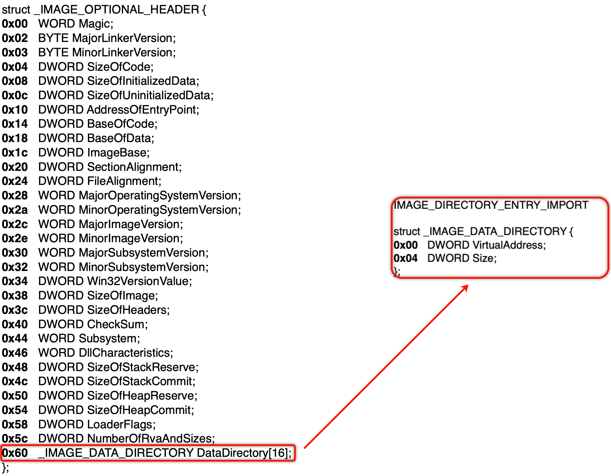
导入表与导出表不同，导出表只有一张，而导入表有很多张，每一张表对应着不同的依赖模块，导入表的结构如下，它一共有20字节：
typedef struct _IMAGE_IMPORT_DESCRIPTOR { union { DWORD Characteristics; DWORD OriginalFirstThunk; // RVA，指向IMAGE_THUNK_DATA结构数组 }; DWORD TimeDateStamp; // 时间戳 DWORD ForwarderChain; DWORD Name; // RVA，表示依赖模块名字的地址，这是一串字符串 DWORD FirstThunk; // RVA，指向IMAGE_THUNK_DATA结构数组} IMAGE_IMPORT_DESCRIPTOR;我们可以根据扩展PE头先找到导入表的相关信息：
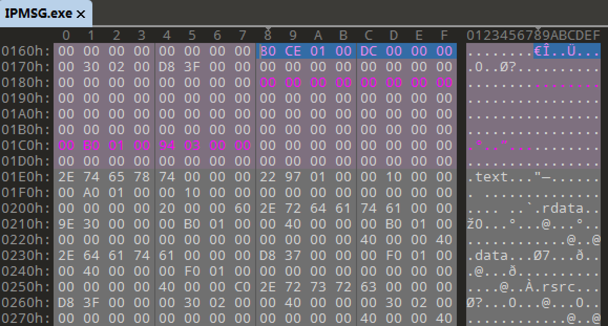
VirtualAddress: 0x0001CE80Size: 0x000000DC根据VirtualAddress找到第一张导入表：
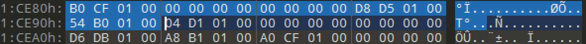
导入表的每张表之后都跟着另外一张表，直到遇见20个0x00结束，如下图所示，一共有10张表：

注意：下文中出现的PE文件文件对齐与内存对齐一致，即RVA等于FOA，无需转换。
确定依赖模块
找到导入表之后，我们可以根据它的第四个成员Name知道当前PE文件所依赖的模块名字，先看第一张表：
它的Name成员就是：0x0001D5D8，接着找到这个地址查看模块名字，这里也是一个ASCII字符串，所以从这个地址开始，遇见0x00停止寻找：
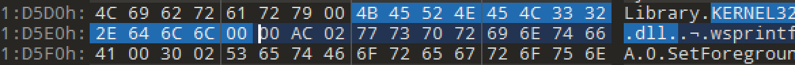
那么它的名字就是KERNEL32.dll，可以用这张方式依次寻找。
我们可以尝试使用工具DTDebug去查看PE文件运行时所要依赖的模块：

这时候你会发现这里依赖的模块数量远远大于10，这是因为除了当前PE文件本身需要依赖的模块以外，其所依赖的模块也依赖了其他模块，这里就一并展示进来了。
确定依赖函数
在上文中我们可以通过导入表确定依赖的模块名（导入表结构体的第四个成员Name），接着我们还需要确定具体依赖的函数是什么。
我们需要关注一下导入表结构体的其他成员，如下图所示，第四个成员很好理解就是指向的依赖的模块名，而第一个成员与第二成员都分别指向了不同的表，分别是INT（Import Name Table，导入名称表）和IAT（Import Address Table，导入地址表）。

仔细观察上图，你会发现，虽然这两个成员指向是不同的表（地址不一样）但是内容却是一样的，我们通过两个成员都可以找到当前所依赖模块中的函数。因此，我们就选择一个成员去寻找到依赖函数即可，我在这里选择了第一个成员OriginalFirstThunk。
第一个成员指向的就是一个INT，这张表中的成员就是如下结构体，这个结构体中就只有一个联合体，它的宽度就是4字节：
typedef struct _IMAGE_THUNK_DATA32 { union { PBYTE ForwarderString; PDWORD Function; DWORD Ordinal; // 序号 PIMAGE_IMPORT_BY_NAME AddressOfData; // 指向IMAGE_IMPORT_BY_NAME } u1;} IMAGE_THUNK_DATA32;INT里有很多个这种结构体，它与倒入表一样，当你遇见与该结构体相同宽度的一段0x00填充的数据则该表就结束了。同样，你在这张表中发现结构体的数量，就表示你依赖该模块的函数数量。
根据上一章中找到的第一张导入表信息：
OriginalFirstThunk：B0 CF 01 00 Name：D8 D5 01 00 -> KERNEL32.dll跟进地址0x0001CFB0，找到INT，我们可以看见这里有很多个成员：
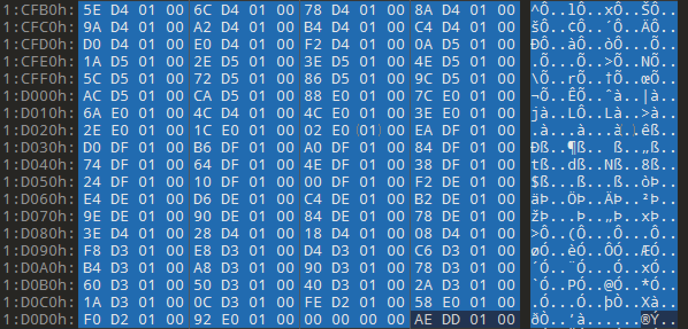
这些成员也有一些精妙之处，你需要判断每一个成员的最高位是否是1，如果是，则去除最高位的值，得出的之的就不是一个地址了，而是函数的导出序号，反之就是一个RVA，指向了如下结构体，这个结构体一共只有三个字节，第一个成员Hint可能为空，如果不为空，那么它就是函数在导出表中的索引，我们可以使用这个索引直接去导出表找到函数的地址；第二个成员Name，也就是函数的名字，只有一个字节，这是因为函数名字的长度无法确定，所以只取名字的第一个，如果你要完整寻找的话，名字是一个ASCII字符串，从第一个名字开始找，直至遇见0x00结束：
typedef struct _IMAGE_IMPORT_BY_NAME { WORD Hint; BYTE Name[1];} IMAGE_IMPORT_BY_NAME那么我们来看一下INT中的第一个成员（地址：0x0001D45E）指向的结构体，如下所示，这里的第一个成员Hint不为空所以我们可以通过它去导入表中找函数地址，第二个成员0x45，从它开始往后直到0x00就是完整的函数名字ExitThread：
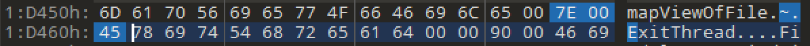
确定函数地址
之前我们所了解的两张表INT、IAT，在PE文件加载前其结构内容都是一样的：
但是，当PE文件加载之后，IAT就发生了变化，它里面就直接存储了函数的地址：

我们在使用依赖模块的函数时，实际上是间接调用，如下图所示，调用MessageBox，汇编指令去调用并不是直接call地址，而是间接的，从内存中找到地址再去call：

而这一块内存就是IAT中存储的函数地址：

那么为什么不只留一张表呢？这是因为IAT的函数地址很有可能会被修改掉，导致地址不正确，如果你只有一张表，就没有一个正确的参照物了。
重定位表
在PE中最重要的三张表就是导出、导入和重定位表，本章来了解一下重定位表。
重定位表是什么？假设某一PE文件使用了一些模块，这些模块都有自己的ImageBase（在内存中开始的地址），但是实际上在内存中模块的ImageBase被别人占用了，这时候模块就需要偏移，换一个新的内存地址去展开，假设在这模块中有很多已经写好了地址的硬编码（但凡涉及到直接寻址的指令都需要进行重定位处理），当换了地址之后就找不到了，甚至会出现安全隐患，所以硬编码的地址是需要随着偏移而去修改的，这时候就需要一张表去记录需要修正的位置，便于去根据对应偏移修正，这张表我们就称之为重定位表；一般来说，EXE文件是没有重定位表的，因为它不会提供函数给其他人用（导出表），所以运行时它理应是第一个载入内存中的，而DLL之类的PE文件则一定是需要重定位表的，因为它并不一定会加载在ImageBase上。
重定位表的位置信息与导入、导出表一样，在扩展PE头的最后一个成员中的第6个结构体，结构体的成员与导入、导出表一样，分别表示重定位表的起始位置和大小：

重定位表中有一个结构体，它一共有8字节：
typedef struct _IMAGE_BASE_RELOCATION { DWORD VirtualAddress; // RVA DWORD SizeOfBlock;} IMAGE_BASE_RELOCATION;typedef IMAGE_BASE_RELOCATION ，* PIMAGE_BASE_RELOCATION;但是完整的重定位表还包含了很多重定位项，所以整体大小是没有一个统一标准的，需要根据实际情况。该结构体的第一个成员VirtualAddress表示基地址，第二个成员SizeOfBlock也就是减去当前结构体的大小之后其他的所有重定位项加起来的大小。
这也就表示每一个重定位表是IMAGE_BASE_RELOCATION结构体开始，跟着的就是重定位项。
从理论上来说，重定位表中存储的项应该都是4字节大小的地址，但是这样一旦需要修改的地址多了，就会占用大量的空间，所以重定位表就做了一些优化，假设你现在有这几个地址需要修正：
0x8001230x8004560x800789那么优化之后，IMAGE_BASE_RELOCATION结构体的第一个成员存储的就是0x800000，而这个结构体之后的每2字节存储就包含0x123、0x456、0x789，这样就大大的节省了空间。同时，这也就说明重定位表的实际大小为IMAGE_BASE_RELOCATION结构体（8字节）+N*2字节。
重定位表是按照一个物理页（4KB）进行存储的，也就表示一个4KB内存有需要修正的位置，就会有一个重定位块，一个重定位表只管自己当前的物理页的重定位。
但需要注意的是由于内存对齐的缘故，在重定位表中还是有很多的无用项的，所以你需要判断当前重定位项（2字节）的高四位是否为3，如果是那么低12位就是偏移量，最后的地址也就是VirtualAddress+低12位，如果不是就表示这是无所谓的值。